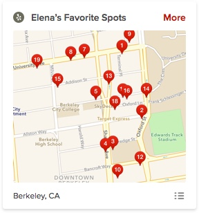

spring 2015 • travel
yelp redesign
I've been an avid user of Yelp for years. However, its web interface hasn't changed much especially the user profile page which plays an important role for building an online social community. I had a chance to redesign Yelp's user details page for my interview challenge to make it clean and more personal.
Everyone knows Yelp. Whenever I go for a dinner with my roommate, it seems like a routine for us to check out Yelp before we decide where to go. The menu seems to lose its importance as we always order based on Yelp’s reviews. We never want to go to a fancy restaurant but end up with a disappointed meal.
However, as much as we love Yelp, its web interface definitely has more room for improvement in terms of experience. When regular users have trouble navigating Yelp’s website, no wonder why new users don’t bother use the website at all.
Therefore, I chose to start with Yelp’s user details page.
User Research
It is good to know that many people use Yelp frequently. I spoke to many people about their experiences with Yelp. Most people mentioned that they started to use Yelp because their friends recommended. One user also mentioned that she started to use Yelp because every time she googled things up to find a spot to eat, a link to Yelp’s reviews always pops up as the first result. However, Yelp to users is becoming more like a tool to check out reviews and discover restaurants instead of a social network where you can get to know more friends. Half of the users even told me that they had no idea they could add friends on Yelp.
With mobile apps getting more popular, people seem to forget about the web age when they started to socialize online. It is true that mobile apps are developed to perform tasks that can be done on web, but when it comes to social network, people are still used to go online and check up on their friends and get to know new people. Facebook is a good example.
The goal for Yelp is not just about building a robust review system, is also about bringing people together. What’s the fun of writing a review for yourself?
The importance of user details page can be easily underestimated. A good design of this page should be well organized, balanced and simple, just enough for user to get to know about the profile owner and connect.
Usability Testing
I asked a few people about their impressions with user profile page before I started my redesign. From the feedbacks that I’ve gathered, the three main issues with Yelp user details page are:
Layout: lack of hierarchy
Visual hierarchy is an important concept to user experience. A balanced and organized hierarchy allows people to identify the important elements on a web page at a glance and guides them through more in-depth content on a web page.
At first glance, some people got really lost. When I asked them to describe what they saw, they literally listed everything. The current visual hierarchy has failed to emphasize the most important information because information is all over the places.
Navigation: confusing and repetitive
There are actually three navigations here on the user details page: the main navigation below the search bar, the tab navigation with a lot of items and the three side-by-side sections. Good navigation is concise so that it helps people find the information they want quickly. Each navigation should have a reason to be there, and that reason has to be unique.
Content: equally important with little focus
It is not uncommon that users find text very annoying. People love graphics, because they’re more direct, more visually attractive, and most of all, more compelling. Some users even told me how they make decisions by just looking at the pictures. Indeed, pictures are always the first things to pop out on a web page. One user mentioned that she noticed the rating distribution immediately. Wisely using pictures and graphics on a web page can effectively emphasize elements that users need to see before they dive deeper into the content.
Some treatments that help solve the problem of emphasis are, for instance, typography and spacing. Well chosen font size and weight can make a huge difference. Spacing helps people identify the relationship between different elements and filter or group information at a glance.
Redesign
Based on the feedbacks I’ve gathered, I decided to focus on three areas when redesigning Yelp user details page:
- Improve hierarchy by rethinking the layout and repositioning elements
- Take out repetitive navigations and create a more straightforward navigation experience
- Make important features more accessible
Aside from these three user experience issues, the website feels more like a tool where people only go to search things up and get reviews, like a vending machine rather than a social community. As such, in my redesign, I considered opportunities to make the user profile page feel more alive and homey.
After I listed out the areas to improve, I went for a quick sketch of the page.
Final Design
Branding
I like the original red color which eye-cathing and brings people's attention. I also kept the gradience from red to yellow to indicate ratings. I used white as background for sections to increase contrast and legibility.
The font I used is Proxima Nova, a slightly less formal font compared to Helvetica Neue. I also played around with sizes and weights to distinguish elements.
Thanks to Stephen Verhalleman who designed the burst icons for Yelp. I used some in my redesign to lift the spirit and give it a lively touch.
Colors: red range — #C41200, #EB050B, #F48149, #F0A527, #E4B92B, #D79322, grey range — #494949, #888888
Typography: Proxima Nova — regular for general content, semibold for titles, light for text, sizes — 10 to 24 with larger sizes for titles and headers and smaller ones for text.
Layout
Yelp’s website is very informative but it's also a downside in terms of the difficulty to keep everything organized. The design goal of the layout is to clearly show what users expect to see at the right places. The result is a simply organized three-column layout, with user's activities prioritized in the middle, profile on the left side, and social features and photos on the right side.

Navigation
Conventionally, most people know that the logo takes them back to the home page. It is still more direct to have “Home” on navigation bar. Many users also find it handy to have a "Write a Review" button at all times.“About Me”, “Messages”, and “Find Friends” are very personal compared to global action items. Both “Talk” and “Events” are public pages. The search bar is definitely the mostly used function so it should be large and easy to notice.
The solution is a clean navigation with items grouped by functionalies from left to right: logo, search, page titles, actions, and user profile.
User Profile
The profile needs to be as concise as possible but when the badges and past profile photos start to diverge people’s attention, and small font sizes annoy the users, we need to figure out how to make important information stand out and get rid off the redundant elements. In addition, the call-to-action is not clear because “Add Friend” button is not quite emphasized. The point of viewing profiles is to build connections. Meantime, we don't want to throw too much information on a sidebar to make it feel cluttered and intimidating so I decided to only show the most important information. It's only click away from knowing the entire universe.
Some people may feel hesitant before they friend strangers. Well, on Yelp, they shouldn't need to worry about that too much. People can be friends on Yelp just because they appreciate each other’s reviews, or they happen to feel the same way about a place. That’s why rating distributions, compliments matter so much. In my redesign, I also gave them separate sections to let the information pop out.
Activities
Activities include reviews, lists, bookmarks, etc. It's very helpful to have a menu to switch content, instead of having different sections all over the page.
As for reviews, some of them are lengthy and users don’t really read every single line. Users have to scroll down all the way to scan through long reviews. Instead, they tend to filter the reviews and find those interest them the most. Therefore, I decided to give users the option to expand the reviews that interest them and a full control over the filer function.
Social
The right column is where you can show off the photos and be social. It is a trend that more users tend to upload photos rather than type thousands of words. Many people find very convenient to share their experiences and photos using Yelp’s app. That explains why we need a section to display photos and videos.
In addition to the friends and photos sections, there's one more section at the bottom right. It used to be the “Lists” feature but we have already put “Lists” as part of our “Activities”. To get some inspirations, I interviewd users with one question, “what is one thing that you expect Yelp to have?."
Some people mentioned that they would to have a “tag” or “group” feature to organize their bookmarks, because they have so many bookmarks but forget about the reason why they bookmarked in the first place. Some users mentioned about a map view to mark favorite spots based on the reviews. Here is a rough illustration of this idea.
Notes
The design is not interactive, so there’re many features hidden in a drop-down menu. This a very interesting practice for me and I’d like to get more opinions on the redesign. Thanks for reading, and I hope you like it! ☺